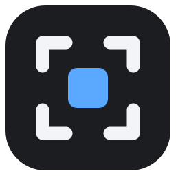
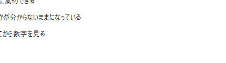
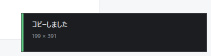
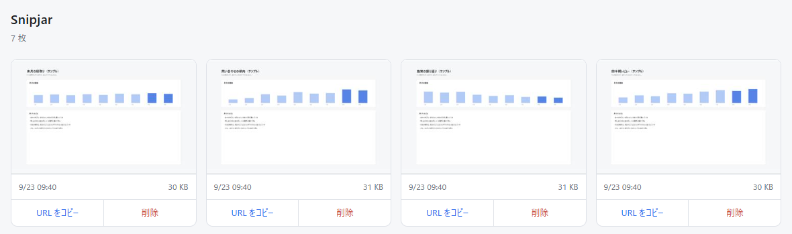

Snipjar範囲をドラッグして「コピー」か「保存」。撮ったものは あなたの Cloudflare に入り、あなただけの一覧ページに並びます。 預ける相手も、使い切る無料枠もありません。
Windows 10 / 11・MIT ライセンス・要 Cloudflare アカウント（R2 無料枠 10GB）



スクリーンショットには、見せるつもりのないものが写ります。 開いていたタブ、社内の画面、誰かの名前。
Snipjar には預かり先がありません。Worker も R2 バケットも、あなたが自分の Cloudflare アカウントにデプロイしたもので、作者は中身を見られません。 サービス終了も、規約変更も、容量の上限で困ることもない。代わりに、Cloudflare の アカウントだけ自分で用意してもらいます。
.\setup.ps1 を実行する「Windows によって PC が保護されました」と出ます。コード署名をしていない ためです。証明書は毎年費用がかかり、入れてもしばらく警告は消えません。 納得できる場合だけ「詳細情報 → 実行」を押してください。
信用できなければ、リリースの SHA256SUMS.txt と照合するか、
build.ps1 で自分でビルドしてください。Windows 以外に何も要りません。
| クリック | 画面が暗転するので範囲をドラッグ |
コピー / C | 画像をクリップボードへ。Discord や Slack にそのまま貼れます |
保存 / S | Pictures\snipjar\ に PNG |
Esc | 破棄。範囲選択中なら選択をやめる |
どちらを選んでも裏で自分の R2 に上がり、一覧ページに並びます。
外に出したくない日は config.ini に upload=never と書けば止まります。
Windows 10 / 11
Cloudflare アカウント（R2 を有効化。無料枠 10GB）
Node.js（デプロイに使う wrangler のため）
.NET SDK は要りません。クライアントは Windows に同梱されている
csc.exe でビルドします。exe は 130KB 程度です。